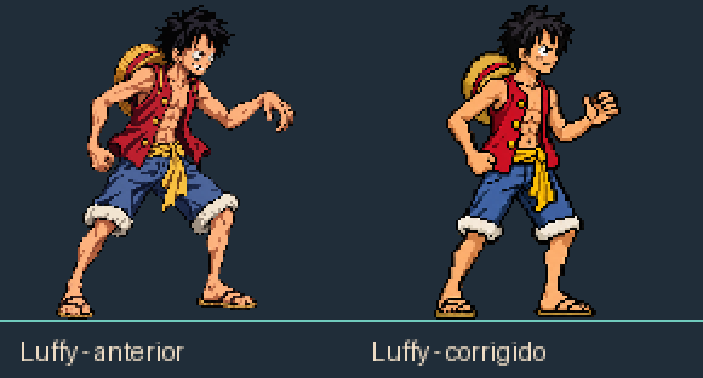

Comparação com o elenco na mesma escala

Pré-timeskip, Enies Lobby. O sprite tem 130 pixels de altura em uma célula transparente de 256 × 256, com pivô em (128, 224).
Polimento da pose de combate e do rosto. A escala e o pivô são iguais nas duas versões.
Baixar o sprite corrigido · Baixar o sprite anterior
